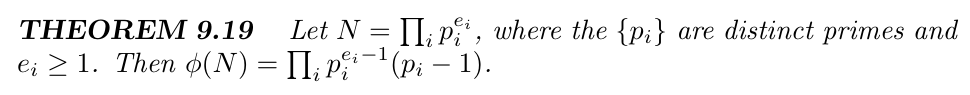
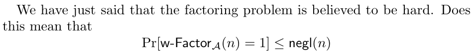
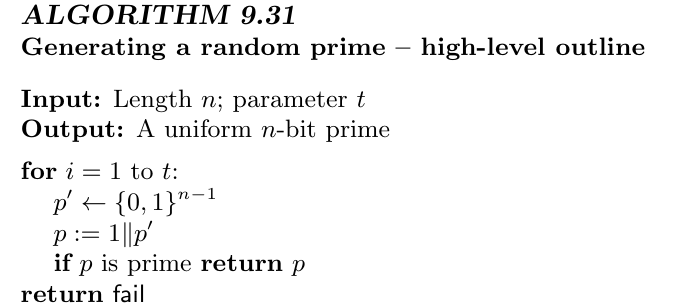
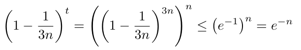
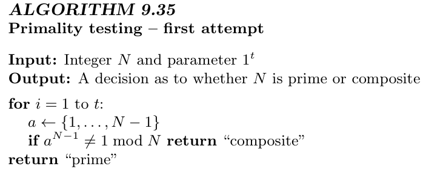
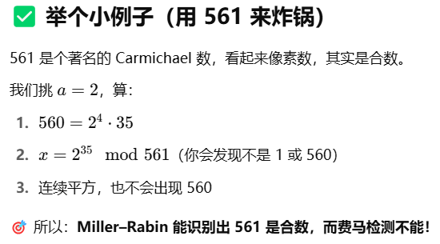
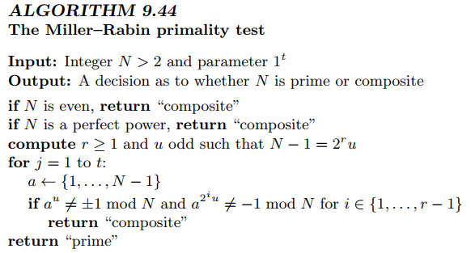

katz密码学教材v3阅读笔记
本篇笔记用于记录阅读 introduction to modern cryptography (3rd Edition) 一书的阅读
重点在于公钥密码部分
本文尽量通俗讲解，但是不能代替阅读原著
目录
第一章介绍了一些引入，包括公钥加密，历史和现代密码学设计原则
第二章介绍了一些完美加密，也算引入部分（还有信息论的香农定理，很前段时间读论文在[OB22]遇到了）
以上是第一部分，用于引入
第三章介绍了对称加密，然后我打算跳了~
第四章讲消息认证码MAC（等我有钱了也要买MAC（不是这个mac））
第五章讲CCA安全，CCA也就是选择明文攻击
第六章讲哈希函数，目录看起来是区块链的基础（有默克尔树之类的）
第七章讲流密码之类的~不懂，后面再看看
第八章是 好的我不懂，后面看了再来补目录
以上是第二部分，主要是对称加密
后面开始是核心内容，我也会从这里开始看
第九章讲数论和数学困难问题假设之类的，RSA啊什么的是基础，重中之重
第十章讲基于离散对数的加密，然后我突然想起导师发我了一篇相关论文我好像还没看（光速逃）
第十一章讲密钥管理分发，就是DH密钥交换那一类
第十二章开始上正菜了，标题的公钥密码加密，但是实际上里面有很多重要概念
第十三章讲数字签名，难度下降，但是更偏应用
第十四章讲后量子，加油加油加加油~
第十五章也就是最后一张，讲公钥密码的高级操作，嘻嘻后面再细看
以上是第三部分，是最重要的公钥密码
好的，开始干活~
第九章 数论和密码学困难问题
本章可以学到的东西：密码学基础需要的数论，为后续学习奠定基础
9.1 前置知识和基础数论
9.1.1 素数和可除性
整除：a*c=b，则称a能整除b，写作a|b，否则a∤b
因子：a|b，则a是b的一个因子，若a≠1且a≠b，则a是b的一个非平凡因子
素数：没有非平凡因子的数（又称质数）
合数：有非平凡因子的数
算数基本定理：任何大于1的整数都可以唯一的表示为质数的乘积 $N=p_1^{e_1}p_2^{e_2}…p_k^{e_k}$
带余除法：a=bq+r且0≤r<b
||N||表示二进制长度，||N||=⌊log N⌋+1 （⌊⌋表示向下取整）
gcd(a,b)表示a和b的最大公约数
欧几里得定理：存在整数X和Y，满足Xa+Yb=gcd(a,b)（证明在第308页开头，自己去看）
欧几里得引理：若c|ab且gcd(a,c)=1，则c|b
进一步的：若p是质数，且p|ab，则p|a或p|b
9.1.2 模运算
就是取余，自己看书吧（光速逃）
真正有意思的都在后面呢
9.1.3 群
讲的是群运算，很多基础知识
具体的可以自己看书，我说下我的理解：就是一个自动取模的机器
举个例子，c语言最大是2147483647，再加一就爆内存了，变成-2147483648了，这就是个群，然后再从-2147483648加加加不断加 加到厌倦，然后再到2147483647，再加，又变回-2147483648了
群运算，我愿称之为自动取模机~
当然这只是一种加法群，后面还有乘法群啊啥的，不过本质一样，一样的哈
阶：对于群$\mathbb{G}$，群的阶 $m$ 指的是对于任意$g\in\mathbb{G}$，都有 $g^m=1$，记为 $m=|\mathbb{G}|$
阶可以完成很多很厉害的运算（就行FFT，一种将乘法的时间复杂度从$O(n^2)$降低到$O(n\log n)$的算法，就是基于阶的），更多的应用可以问问AI，提示词：我的研究方向是密码学，刚刚学习了群的阶的相关概念，你能不能为我通俗讲解：阶在密码学中还有什么应用。由于我是初学者，请一定要通俗，最好举例
后面还有一些推论和证明，请自行阅读；如若不懂可以跳过，不影响咱橙味觅马靴糕守~
9.1.4 群 $\mathbb{Z}_N^*$
哎呦呦，鸡汤来喽~
这个群 $\mathbb{Z}_N^*$ 十分滴珍贵，应该让同志们先学
$N$ 指的是这个群的模数，$*$ 指的是乘法
也就是这盆鸡汤，是在 ${0,1,…,N-1}$ 中的乘法运算
但是里面有很多元素没有乘法逆元，所以只需要将他们剔除，剩下的就构成了这个乘法群。这个群在后面很常见，尤其是在密码学中种种构造中~
什么？你问我乘法逆元是什么？别问我，去问AI，它讲的比我讲的好
什么？你说打不开？那你去问问学长吧（别问为什么不去问学姐，我要想要学姐>.<）
就是说，$\mathbb{Z}_N^*$ 里面有多少个元素，事实证明，有 $\phi(N)$ 个元素
\phi 也就是欧拉函数，怎么计算呢？来自己看吧：

欧拉函数有很多很好玩的特征，就想满足对于任意 $a\in\mathbb{Z}_N^*$，都有 $a^{\phi(N)}\equiv1\mod N$
（在模运算中，等于号一般写作 $\equiv$，它和普通等于号的效果差不多，你可以给它俩画等号~所以该画哪种等号呢）
特别的，你看上面的式子，如果 $N$ 是质数，则可以算出来 $\phi(N)=N-1$，就有 $a^{p-1}\equiv1\mod p$
诶？这不是著名的费马小定理嘛，就这样被咱推出来了（傲娇
COROLLARY 9.22 是和 后面的RSA有关联的，可以看一下，也可以等后面会遇到的
9.1.5 同构和中国剩余定理
啊啊啊这一章不想写了，窝补药学基础数论，算了先跳一下，读者感兴趣可以继续往后读，中国剩余定理RCT就是求一元线性方程组的，没啥东西感觉，不过也挺重要的；感觉后面用到的不多？主要是RSA的共模攻击（来猜猜为什么没人用RSA进行同态加密），还有可能可以构造门限？不懂没用过
好的直接跳到RSA P322
9.2 素数 分解 RSA
好帅的标题~
就，简单说下吧
p和q都是大质数，然后n=p*q，已知n无法倒推p和q
然后 $\phi(n)=(p-1)(q-1)$，没有p和q，也没法算n的欧拉函数
欧拉函数可以用来计算逆元，也就是使算法可逆的key
也就是基于大数分解数学困难问题的加密算法：加密是正向，谁都可以加密；解密是逆向，需要逆元，但是不能分解n就没有逆元，所以解密只能有私钥的人进行
然后看几个很常见的术语吧：

按我的理解就是：算法 $\mathcal{A}$ 正确分解 $n$ 的概率，不高于一个可忽略的函数
$\Pr$表示概率，$\text{w-Factor}$ 指的是分解 $n$ , $1$ 表示成功分解，$\text{negl()}$ 指的是一个随着 $n$ 增大而急速减小的函数
9.2.1 生成随机素数
如何生成随机大素数 $p$ ？这一点很关键，如果大素数生成符合一些特定规则，会很容易进行分解（如：维纳攻击等）

大致过程就是随机生成随机数然后再check
诶呀呀，我还以为是很优雅的生成方式
不过有一说一这个确实够用，只不过有点安全隐患罢了（尽管安全隐患很小，基本上是可忽略的）
下面证明：随机roll出来的数，很容易roll到素数
结论 9.32 n位的数中，素数的占比不低于 $\frac{1}{3n}$
好的，下面我们进行一个很nb的操作，不妨设 $t=3n^2$，那么进行 $t$ 次操作后选不到素数的概率是

误区：这里的 n 指的是位数，如果遍历（不随机）选择素数的话，时间复杂度是线性的（即$O(n)$），优化一下不会低于 $O(\sqrt{n})$；而使用随机选择，使用的是 $n$ 的二进制下的位数
即对于1024位的n：如果使用朴素算法（遍历），大概需要计算 $2^{1024}$ 次；而使用随机算法，只需要 $3*1024^2$ 次——完全不是一个量级的
额外说一点，对于具体实现，使用python，不推荐使用random库——因为它不安全，是可预测的。除非你进行其他额外的操作
在离散对数中，需要两个素数（取模用的），可以直接 $p=2q+1$，这样生成出来的素数又大又安全（傲娇
但是在RSA里头，需要roll两个素数的，千万别用！因为：
这玩意不就一下被分解了吗（狂汗
在知道了随机roll出来可以很快得到素数后，紧接着到来的是质数检测
9.2.2 素数检测
这一章讲一个叫做Miller–Rabin素数检测的算法，它不能绝对证明一个数是素数，但是可以极高概率地判断一个数是不是合数，快得飞起
传统算法：直接试除法？线性时间复杂度，炸缸了~
米勒罗宾：也是基于概率的，芜湖起飞
出发点——费马小定理：如果 $n$ 是素数，且 $a$ 是不整除 $n$ 的整数，则有 $a^{n-1}\equiv1(\mod n)$
也就是说，可以随机roll这个a，如果很多次都不符合费马小定理，那么就是合数，否则就是素数
初步算法如下：

进一步的，我们再把这个算法变厉害变快一点：
第一步：拆解 $n-1$
$n-1=2^s\cdot d$
例如：$n=561$，那么 $n-1=560=2^4\cdot35$，即 $s=4,d=35$
第二步：随机选择 $a\in[2,n-2]$
用这个 $a$ 来“试探” $n$ 像不像素数
第三步：检查条件是否成立
计算： $x=a^d\mod n$
如果 $x=±1$，则说明没问题
否则就开始连续平方：把 $x$ 平方再取模（共做 $s-1$ 次），看看这些数里有没有变成 $n-1$ 的（也就是$-1$）
如果从头到尾都没有出现过 $n-1$ 的话，我们就抓到一个证据：这个 $n$ 肯定是合数！
这里的 $a$ 就称之为 $\text{witness}$（见证者）

通常运行20~40次，误判率即可忽略不计
从第326页下半部分到第330页上半部分，看起来兜售对算法正确性的证明，这里不再赘述（实际上是我看不懂），感兴趣的读者可以自行阅读（学会后教我（伸手））
然后最终的米勒罗宾筛法如下（前面已经说过了，这里的是原文的内容）

9.2.3 分解假设
引入了一个名叫 GenModulus 的算法，为了说明大数是难分解的（不能在多项式时间复杂度里进行分解）
感觉这一章没什么好讲的，这里就解释一下多项式时间复杂度是什么意思叭
就是$O(n^a)$，n是自变量（一般认为是大数的位数），a是常数
就像直接分解大数，枚举算法时间复杂度大概是 $O(2^\sqrt{n})$，这是指数级的算法，不是多项式时间复杂度
更广义的，多项式指的是 $f(x)=a_0x^0+a_1x^1+…+a_kx^k$，其中 $k$ 是确定的常数，这里直接取最大值 $O(x^k)$ 就好了（为什么？快去学时间复杂度计算，把主定理学了就好了（学会记得教我））
值得注意的是：这里的指数级和多项式级是对于二进制下位数进行讨论的，如果是数字本身，需要集体降低一个量级
9.2.4 RSA假设
RSA困难假设是基于大数分解数学困难问题的，所以本质和前面是一样的
这一块块就很偏理论计算了，群啊什么的，你们加油，我开始看下一章了~
这一章新东西不多，感觉就是把前面的整合起来
9.3 循环群密码学假设
这一章强度上来了哈，稍微一不留神就跟不上了哈
9.3.1 循环群和生成元
前面已经讲过了生成元，这里正式介绍一下——
对于群 $\mathbb{G}$，其阶为 $m$，生成元满足阶是最小的群元素满足 $g^m=1$
这一章是大量的定理和证明练习，不再赘述（我有时间再回来补罢
（逃~
9.3.2 离散对数/DH假设
.gif)
.gif)
.gif)
.gif)
.gif)
.gif)
.gif)
.gif)
.gif)
.gif)
.gif)